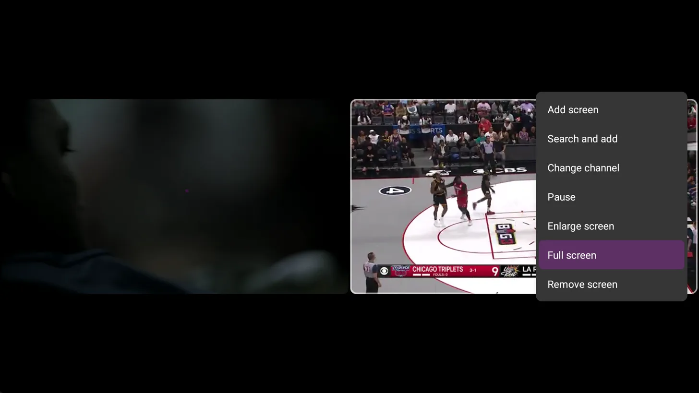

JohnsonFlix+ IPTV App User Guide
Complete Setup and Usage Instructions
Table of Contents
Getting Started
First Time Setup
When you first open the app, you'll be presented with the welcome screen that says "Welcome to JohnsonFlix+" with the message "Add a playlist to get started."
Welcome screen with "Add playlist" and "Settings" buttons
Adding Your Playlist:
1 Click the "Add playlist" button
2 Select the "JohnsonFlix+" playlist from the service menu
Primary Playlist: This is your main playlist with robust guide data and channel organization
Backup Option: If this server is down (we'll notify you), you can use the "Pink Backup" playlist as a direct backup to provider servers
Service menu showing JohnsonFlix+, Kemo Backup, and Pink Backup options
3 Enter your username and password (provided in your welcome email)
Login form with username/password fields and checkboxes
4 The app will load all channels and show "Playlist is processed" with the channel count
5 Click "Done" to complete the setup
Completion screen showing "Playlist is processed" with channel count
Note: Please allow a couple minutes on first startup to download all metadata and channel guide information.
Initial Configuration
General Settings
Navigate to Settings from the left-hand menu to configure these important options:
Main interface showing left menu with TV, Recordings, My list, and Settings options
Auto Launch Options
- Auto start app on boot - App will launch when your device starts
- Auto start app on wake up from sleep mode - App will launch when device wakes (may not work on all devices)
Convenience Features
- Turn on last channel on app start - Automatically plays the last channel you were watching
- Switch to picture-in-picture mode on press Home - Keeps your show playing in a small window when you go to device home screen
Playlist Configuration
Go to Settings > Playlists and select the JohnsonFlix+ playlist:
Playlist management screen showing JohnsonFlix+ with channel count
Update Settings:
1 Set Update interval to 4 hours
2 Enable Update on app start
Update options showing interval settings and toggles
This ensures channel data updates every 4 hours. PPV and ESPN+ channels can update multiple times daily.
Use "Update playlist" option to force manual updates when needed.
EPG (Electronic Program Guide) Settings
Navigate to Settings > EPG:
EPG configuration screen with various update options
Configuration:
- Set Past days to keep EPG to 1 day (or your preference for historical guide data)
- Set Update interval to 4 hours (should match your playlist update interval)
- Enable Update on app start
- Enable Update on playlists change
- Enable Store program descriptions
Additional Settings
Appearance
Customize the look and functionality of your app:
- Toggle channel numbers in TV guide
- Enable 2-line channel names
- Various visual customization options
Playback
Important playback settings:
- Buffer size - Increase if experiencing buffering issues due to slow internet
- Audio pass through - Advanced audio option (only adjust if you know what this is)
Recording (DVR Function)
- Requires sufficient internal storage or external storage device
- Set storage location for recorded media
Reminders
- Set reminders for live events
- Helps ensure you don't miss important shows or games
Remote Control
- View default button functions for guide and player
- Customize button assignments to your preference
Using the App
Player Controls and Menu Bar
While watching a channel in full screen, you'll see the menu bar with various functions:
interface showing Search, Channels list, Recordings, Multiview, Picture-in-picture, and other controls
Search
Find channels and content
Channels List
Browse all available channels
Recordings
Access DVR recordings
Multiview
Multi-channel viewing
Picture-in-Picture
Switch to Picture-in-Picture Mode
Multiview Mode
The app supports multiview for watching multiple channels simultaneously:
1 While watching a channel in full screen, press Select to show channel information
2 Press Down for more options
Loading screen with multiview menu options appearing
3 Select "Multiview" to access multi-screen options
4 Each screen requires one stream (4 screens = 4 stream subscription needed)
Multiview context menu showing Add screen, Search and add, Change channel, Pause, Enlarge screen, Full screen, Remove screen options
Multiview Controls:
Add Screen
Add additional channels to view
Search and Add
Find and add specific channels
Change Channel
Switch channel on selected screen
Enlarge Screen
Make one screen larger than others
Full Screen
Return to single channel view
Remove Screen
Remove a screen from multiview
Multiview display showing multiple channels simultaneously with sports content
Note: Use arrow keys to toggle between screens and change audio source
Picture-in-Picture Mode
- Access through the multiview menu or automatic activation (if enabled in settings)
- Keeps content playing in a small window while using other device functions
Troubleshooting
Buffering Issues
- Increase buffer size in Settings > Playback
- Check your internet connection speed
- Try switching to backup playlist if issues persist
Server Issues
- If JohnsonFlix+ playlist is unavailable, switch to "Pink Backup" playlist
- We will notify you of any planned server maintenance
Channel Updates
- Channels and guide data update every 4 hours automatically
- Force manual updates through Settings > Playlists > Update playlist
- PPV and ESPN+ channels may update multiple times daily